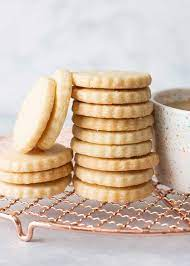

Shortbread

Description
Shortbread is a traditional Scottish biscuit that is made using sugar, butter and plain wheat flour.
Unlike other baked goods, shortbread does not contain any leavening such as baking soda or baking powder.
Ingredients
- 1 cup ( 8oz/225g) ) butter (room temperature)
- 1/2 cup (2oz/60g)) powdered sugar (sifted)
- 2 cups (10oz/300g)) all purpose flour
Steps
- Preheat your oven to 350°F (180°C) and line a baking tray with parchment paper.
- In a large bowl cream together the soft butter and sugar with an electric mixer until light and fluffy.
- Add in the flour and mix until the dough just comes together.
- Turn the dough out onto a counter dusted with powdered sugar and gently roll the dough into a long two-by-two-inch log.
- Wrap the log of cookie dough in plastic wrap and allow it to firm up in the fridge for 30 minutes.
- Once the dough is firm slice the cookies into 3/4 inch thick rounds. Place each round on your baking tray and bake for 16-18 minutes or until just golden.
- Allow cooling slightly before transferring to a cooling rack. Once cool the cookies can be stored in an air-tight container for up to 3 days.